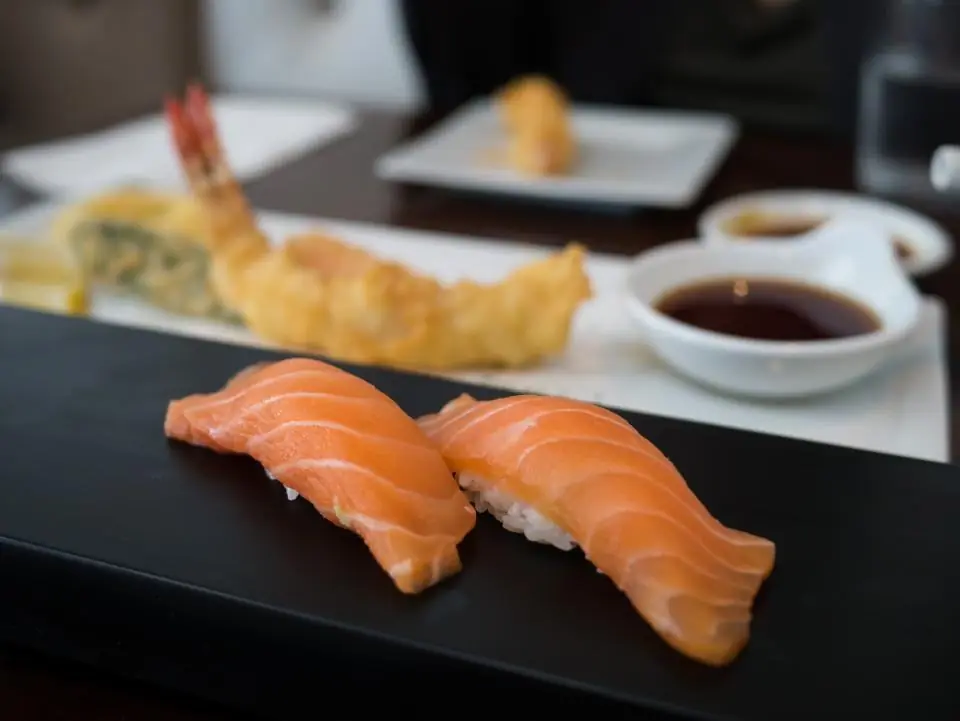
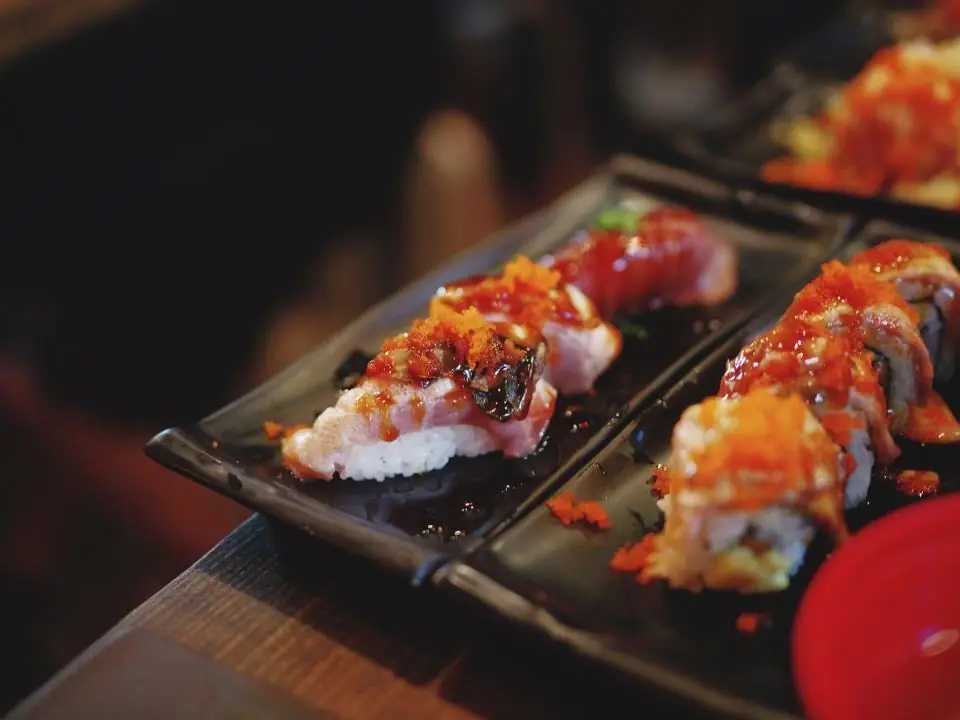
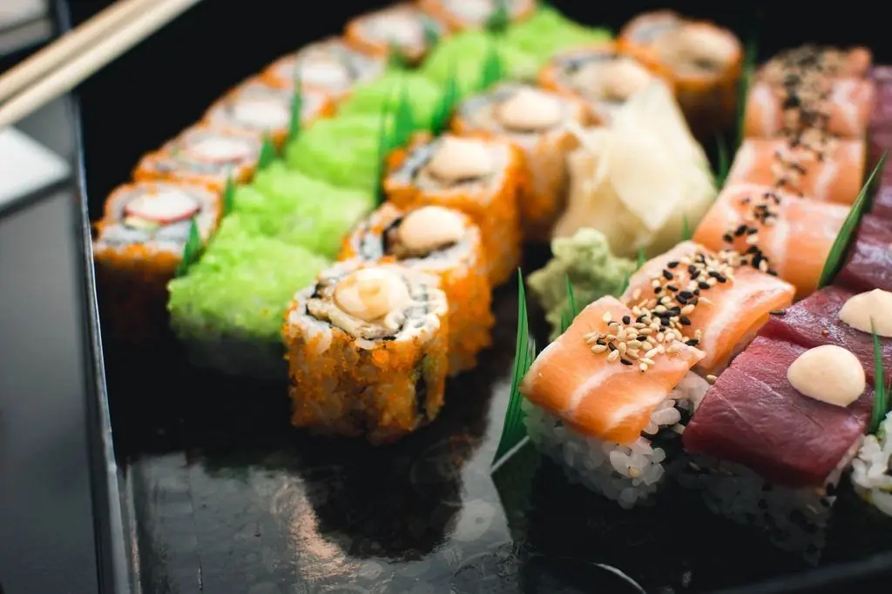
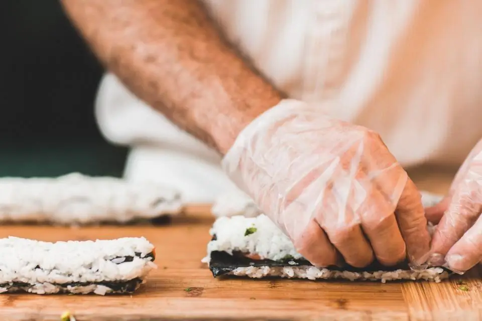
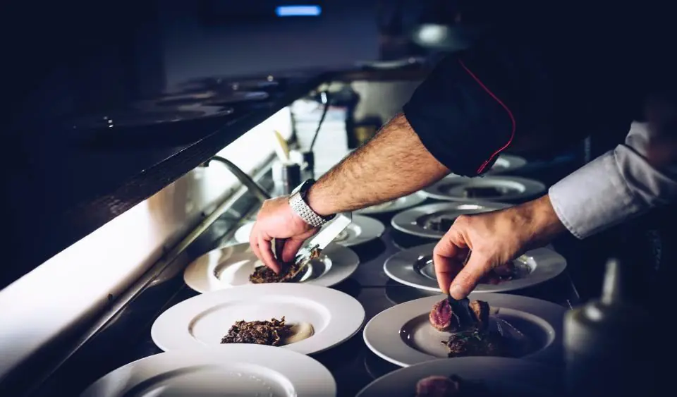
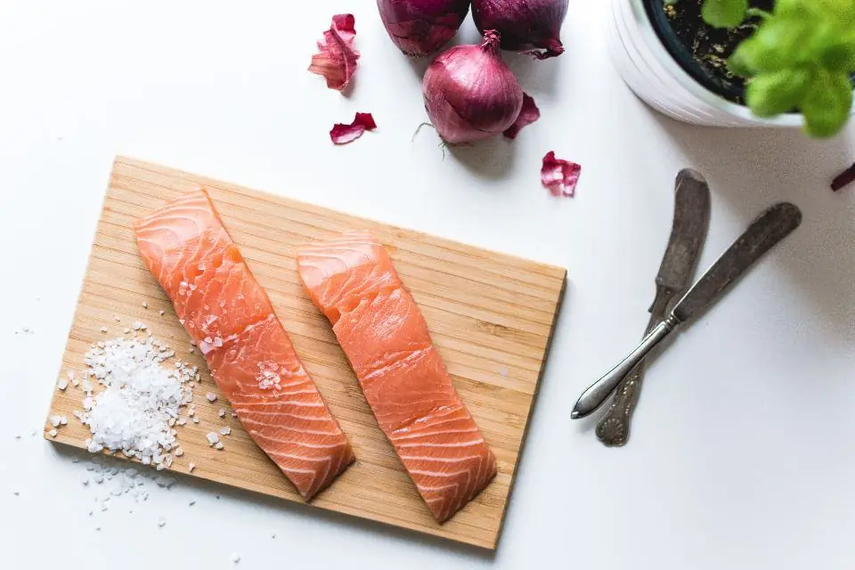
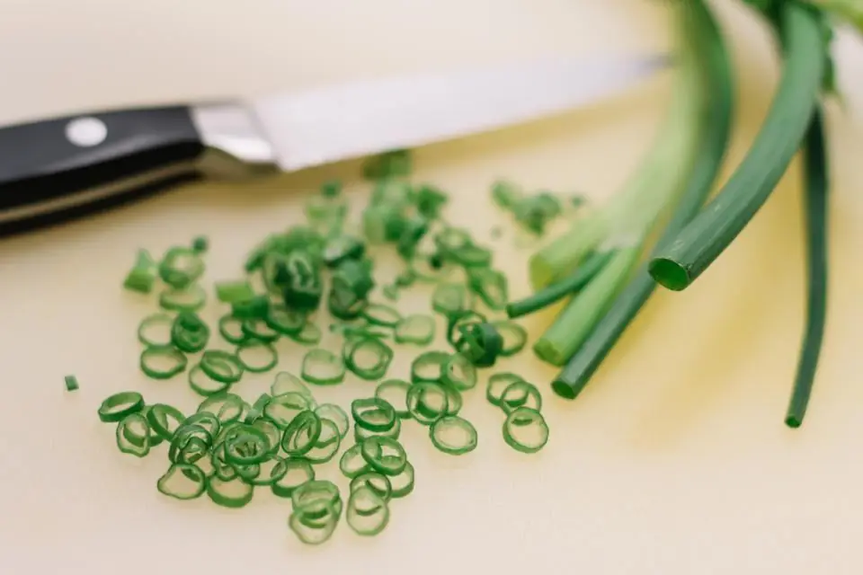

Gästernas favoriter
Rätterna som gästerna beställer gång på gång.
- 62 kr

Flamberad saba
Makrillen bränns vid disken tills skinnet bubblar – rätten vi döpte stället efter.
- 56 kr
Lax med ponzu
Två bitar lax med citrussoja och rostad sesam, den vanligaste beställningen vid lunch.
- 129 kr

Krispig räkrulle
Åtta bitar med varma räkor i en kall rulle.
- 199 kr

Vegansk mix
Tolv bitar utan fisk, med glutenfri soja om du vill.
- 189 kr

Sashimi lax och hamachi
Nio skivor på krossad is med riven rättika och shiso.
- 135 kr

Lunchpoké
Ris i botten, rå lax eller marinerad tofu, edamame och sjögrässallad.
Från disken på Svartbäcksgatan






Illustrationsbilder
Gäster vid disken
Sara L. · Uppsala”Vi satt vid disken på omakasen och fick åtta rätter jag aldrig hade ätit förut. Den flamberade makrillen var bäst.”
Johan P. · Svartbäcken”Beställer take-away varje fredag på vägen hem från jobbet. Den är alltid klar när jag kommer, och riset är fortfarande ljummet.”
Amira H. · Uppsala”Vi beställde fat till sextio gäster på en disputationsfest. Allt var märkt med allergener och det tog slut på en kvart.”